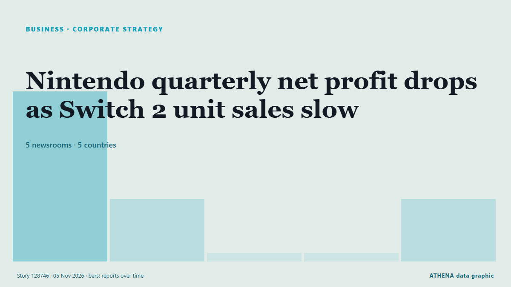

Εταιρική στρατηγική
ΧορηγούμενοΠαρουσιάζεται από  Cybernetics and Artificial Intelligence Lab Welcome to the Cybernetics and Artificial Intelligence Laboratory, established at the Department of Business Administration of the National and Kapodistrian University of Athens. The lab is headed by Professor Dimitrios Thomakos. The lab aims to do research that can be published in top venues. Our research uses tools and methods of Artificial Intelligence, and lies in the following areas: - Forecasting - Decision making - Cyber security - Finance We are always looking forward to collaborating with exceptional students!
Cybernetics and Artificial Intelligence Lab Welcome to the Cybernetics and Artificial Intelligence Laboratory, established at the Department of Business Administration of the National and Kapodistrian University of Athens. The lab is headed by Professor Dimitrios Thomakos. The lab aims to do research that can be published in top venues. Our research uses tools and methods of Artificial Intelligence, and lies in the following areas: - Forecasting - Decision making - Cyber security - Finance We are always looking forward to collaborating with exceptional students!
| 24 Οκτ | 0 |
|---|---|
| 25 Οκτ | 0 |
| 26 Οκτ | 0 |
| 27 Οκτ | 0 |
| 28 Οκτ | 0 |
| 29 Οκτ | 1 |
| 30 Οκτ | 0 |
| 31 Οκτ | 0 |
| 1 Νοε | 1 |
| 2 Νοε | 5 |
| 3 Νοε | 8 |
| 4 Νοε | 5 |
| 5 Νοε | 3 |
| 6 Νοε | 1 |
Οι τίτλοι των ειδήσεων παρουσιάζονται στα αγγλικά, όπως δημοσιεύτηκαν.

Nintendo quarterly net profit drops as Switch 2 unit sales slow
TOKYO: Japanese gaming giant Nintendo reported a drop in quarterly net profit on Thursday as unit sales slowed for its Switch 2 console, but maintained its annual forecasts. από Business Recorder
Schneider to shift eastern rail business to Norfolk Southern from CSX
Schneider National will make Norfolk Southern its primary eastern rail provider as the railroad pursues a merger with Union Pacific. από FreightWaves
CVS Health to split pharmacy chain from health insurance
CVS Pharmacy will be separate from CVS Health, housing major insurer Aetna and benefits manager Caremark CVS Health, the largest US healthcare conglomerate valued at $117bn, has announced its plans… από The Guardian
Toyota posts profit surge and lifts annual outlook as hybrid sales shine
Toyota on Thursday booked its first profit gain in six quarters and lifted its annual outlook by 15%, as a weaker yen and robust demand for higher-margin hybrid vehicles offset a slide in sales in… από Tuoi Tre News
Sony Q2 profit jumps on 'Spider-Man' and PlayStation boost
Blockbuster “Spider-Man: Brand New Day” delivered a major boost to Sony’s September quarterly earnings on the top and bottom lines. από Variety
AD Ports Group appoints Dr Afif Saif Al Yafei as Group Chief Executive Officer
AD Ports Group , a leading global enabler of integrated trade, industry and logistics solutions, announced the appointment of Dr. από Cyprus Shipping News
Arm beats second-quarter revenue estimates on AI and data-center demand
It expects to sell US$2 billion worth of its CPU, the AGI CPU, in fiscal 2027 and 2028. από The Business Times
GXO reports stronger growth as logistics contract wins accelerate
GXO Logistics reported higher revenue and net income for the third quarter of 2026, supported by stronger organic growth and an increase in new business contracts. από Container News
Canva announces layoffs, job changes for about 22% of workforce
The revamp leaves the company in a delicate financial balance. από The Business Times
Piraeus Port Authority nine-month profit falls 21.5%
Piraeus, Greece (Ports Europe) November 4, 2026 – Piraeus Port Authority (PPA) reported a 21.5% fall in nine-month profit to €59.7 million, but container throughput at Pier I grew in the third… από Ports Europe
Aramco acquires 49% stake in Saudi Arabia's Humain
RIYADH: Saudi Aramco has completed its acquisition of a 49 percent stake in artificial intelligence company Humain, formalising an agreement first announced in October 2025, in a transaction… από Arab News
German automaker giant BMW's operating profit falls to lowest level since 2020
Munich-based automaker's operating profit falls by 35.2% in 1st 9 months of 2026. από Anadolu Agency (English)
Libya's top religious authority rules against wearing Nike clothes
The US company was named after the Greek goddess of victory, so the Dar al-Ifta said displaying its logo was unIslamic. από BBC News
Apple FYQ4 Revenue Tops Forecasts On iPhone Sales As New CEO John Ternus Steps Up
Apple revenue beat Wall Street forecasts rising 12% for the fiscal fourth quarter ended in September, led by strong iPhone sales. από Deadline
Nexperia sues Wingtech and its founder, demanding compensation for damages
Nexperia has launched legal action against its Chinese parent company, Wingtech Technology, demanding more than $2 billion in compensation, according to Wingtech. από NL Times
Palantir nearly doubles 3Q26 revenue, riding wave of commercial demand
Palantir reported third-quarter 2026 revenue results that nearly doubled from the previous year. από DigiTimes Asia
Hinge is making a surprising change to its subscriptions. Here’s who stands to benefit
Hinge users may soon have access to a more affordable subscription tier. από Fast Company
Aramco’s Q3 profit jumps 34.5% to $36.3bn
RIYADH: Saudi Aramco’s net profit rose 34.5 percent year on year to $36.3 billion in the third quarter, boosted by higher revenue and a gain from the sale of its stake in Malaysian refining and… από Arab News
Seven Arrested in International Operation Targeting Investment Fraud
Authorities from seven countries seized more than 100 servers and arrested seven suspects of investment fraud that may have costed victims in at least 50 countries more than $4.6 million. από OCCRP